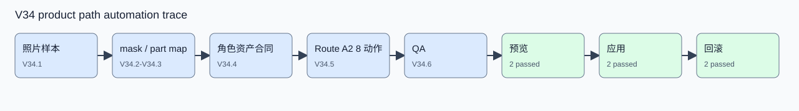
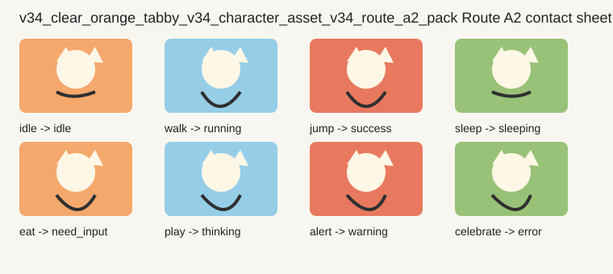
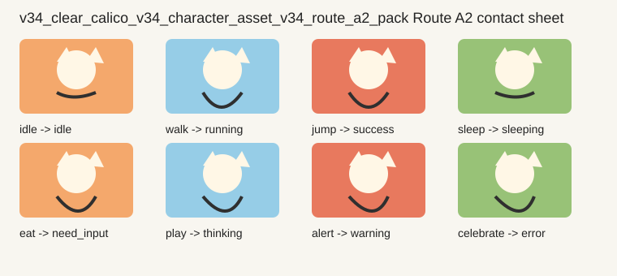

V34 单照片到 2D 动作资产 scoped 验收报告
本报告汇总 V34.1-V34.6 的真实记录、生成视觉证据、产品路径自动化证据和 Route A2 / Route B 对照。结论只覆盖命名样本和本地 Route A2 候选。
目标架构与当前实现
目标架构
照片样本进入安全接入后，依次形成主体检测、mask、part map、角色资产合同、Route A2 8 动作候选、V34 QA、产品预览、目标实例应用和回滚。
当前实现
V34.1-V34.5 已形成 named sample scoped 记录。V34.6 已证明两个 Route A2 候选可进入产品闭环，两个负例会被阻塞。
用户可体验路径证据
产品路径自动化证据图

这是自动化 evidence trace，不伪装成真实浏览器截图。
v34_clear_orange_tabby_v34_character_asset_v34_route_a2_pack contact sheet

V34 target actions: idle, walk, jump, sleep, eat, play, alert, celebrate
v34_clear_calico_v34_character_asset_v34_route_a2_pack contact sheet

V34 target actions: idle, walk, jump, sleep, eat, play, alert, celebrate
单照片到动作资产链路
| Candidate | Sample | Character Asset | V34 QA | Preview | Apply | Rollback | 负例阻塞 |
|---|---|---|---|---|---|---|---|
| v34_clear_orange_tabby_v34_character_asset_v34_route_a2_pack | v34_clear_orange_tabby | v34_clear_orange_tabby_v34_character_asset | passed | ready | applied | rolled_back | 否 |
| v34_clear_calico_v34_character_asset_v34_route_a2_pack | v34_clear_calico | v34_clear_calico_v34_character_asset | passed | ready | applied | rolled_back | 否 |
| v34_clear_silver_tabby_v34_character_asset_v34_route_a2_pack | v34_clear_silver_tabby | v34_clear_silver_tabby_v34_character_asset | failed | blocked | blocked | not-run | 是 |
| v34_clear_silver_tabby_v34_character_asset_v34_route_a2_pack | v34_clear_silver_tabby | v34_clear_silver_tabby_v34_character_asset | failed | blocked | blocked | not-run | 是 |
8 动作与 runtime 投影
| Candidate | V34 目标动作 | 当前 runtime 动作 | 帧数 | 局部动作分 | 整图变形 |
|---|---|---|---|---|---|
| v34_clear_orange_tabby_v34_character_asset_v34_route_a2_pack | idle | idle | 12 | 0.22 | 否 |
| v34_clear_orange_tabby_v34_character_asset_v34_route_a2_pack | walk | running | 12 | 0.72 | 否 |
| v34_clear_orange_tabby_v34_character_asset_v34_route_a2_pack | jump | success | 8 | 0.72 | 否 |
| v34_clear_orange_tabby_v34_character_asset_v34_route_a2_pack | sleep | sleeping | 12 | 0.22 | 否 |
| v34_clear_orange_tabby_v34_character_asset_v34_route_a2_pack | eat | need_input | 8 | 0.72 | 否 |
| v34_clear_orange_tabby_v34_character_asset_v34_route_a2_pack | play | thinking | 12 | 0.72 | 否 |
| v34_clear_orange_tabby_v34_character_asset_v34_route_a2_pack | alert | warning | 8 | 0.72 | 否 |
| v34_clear_orange_tabby_v34_character_asset_v34_route_a2_pack | celebrate | error | 8 | 0.72 | 否 |
| v34_clear_calico_v34_character_asset_v34_route_a2_pack | idle | idle | 12 | 0.22 | 否 |
| v34_clear_calico_v34_character_asset_v34_route_a2_pack | walk | running | 12 | 0.72 | 否 |
| v34_clear_calico_v34_character_asset_v34_route_a2_pack | jump | success | 8 | 0.72 | 否 |
| v34_clear_calico_v34_character_asset_v34_route_a2_pack | sleep | sleeping | 12 | 0.22 | 否 |
| v34_clear_calico_v34_character_asset_v34_route_a2_pack | eat | need_input | 8 | 0.72 | 否 |
| v34_clear_calico_v34_character_asset_v34_route_a2_pack | play | thinking | 12 | 0.72 | 否 |
| v34_clear_calico_v34_character_asset_v34_route_a2_pack | alert | warning | 8 | 0.72 | 否 |
| v34_clear_calico_v34_character_asset_v34_route_a2_pack | celebrate | error | 8 | 0.72 | 否 |
Route A2 / Route B 对照
Route A2 当前结论
已在两个命名样本上形成本地 8 动作候选，并通过产品路径闭环。
局限：启发式和模板化动作的美术上限有限，不能扩大成任意猫通用能力。
Route B 后续价值
Route B 仍是质量对照和 fallback，不是本阶段执行路线。
若 final gate 判断 Route A2 动作自然度不足，下一阶段应引入专业辅助帧、source boundary、sampleId 绑定、contact sheet、QA 和产品闭环证据。
验收结论
| V34.6 product path | passed scoped |
|---|---|
| Claim scan | passed |
| Security scan | passed |
| 剩余风险 | Route A2 视觉自然度仍需 final gate 判断；Route B 可能带来更好的目标体验，但需要独立证据。 |